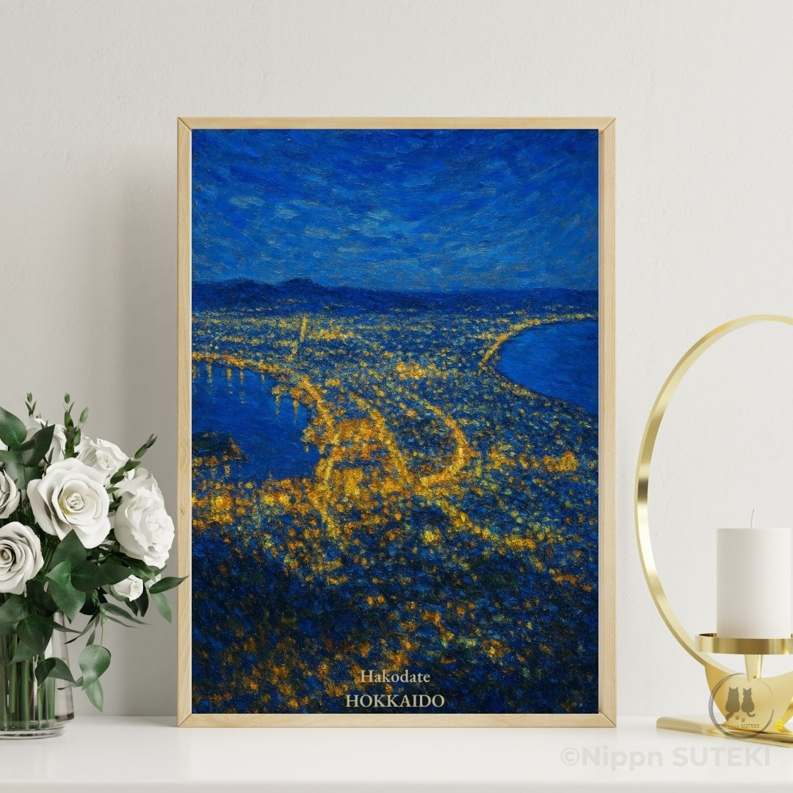
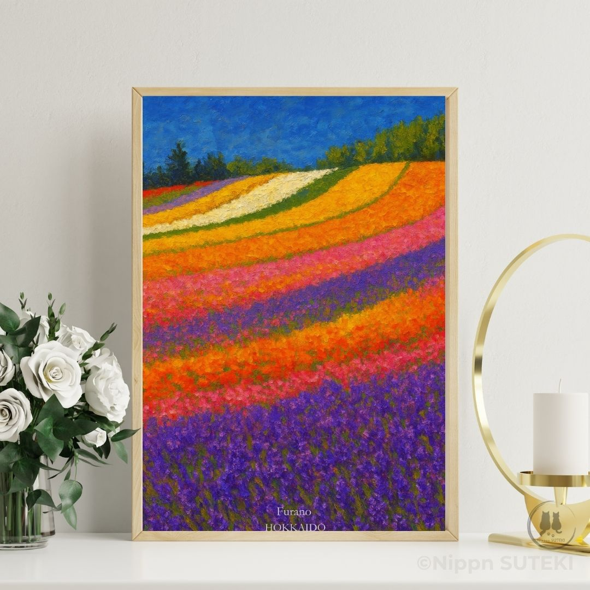
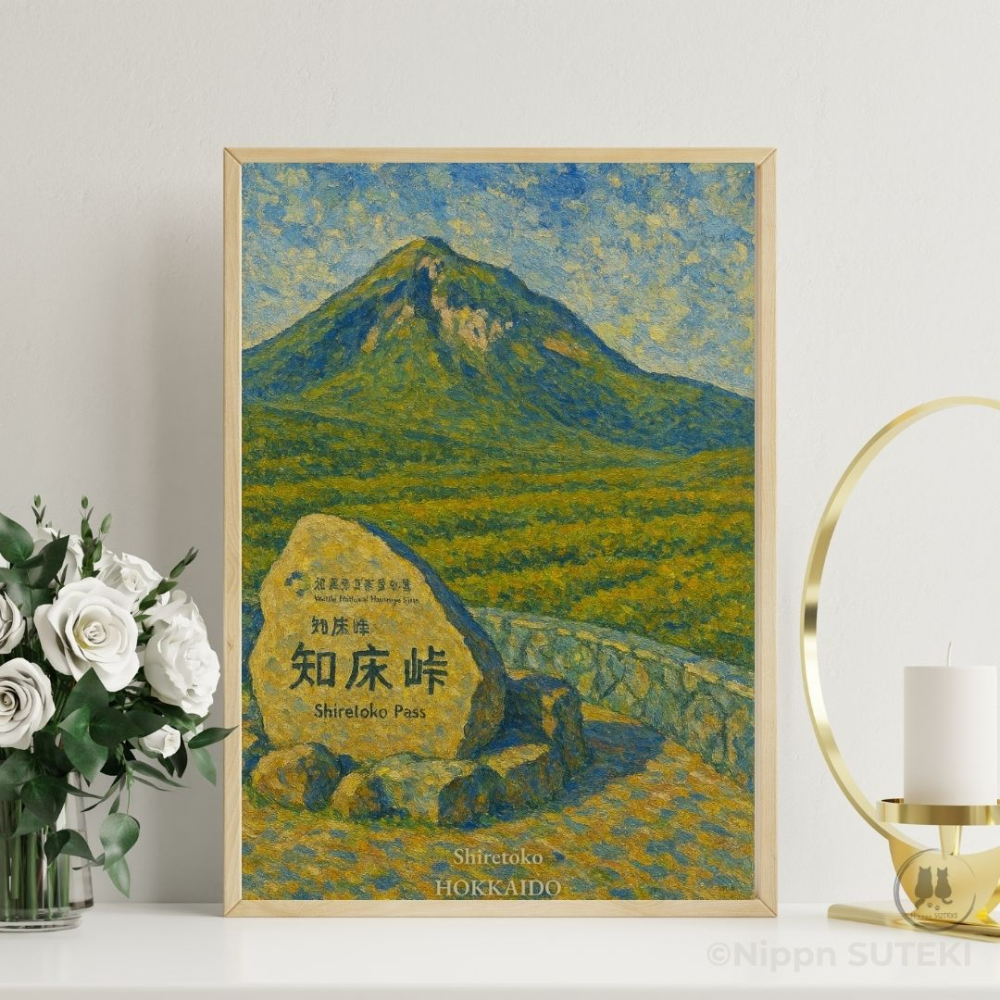

Enter Kiri's Perspective
The tombolo that took thousands of years to form. A city of light pressed between two dark seas. Why this night view looks less like a jewelry box — and more like a Dragon's Back.
Most people know Hakodate for its night view.
But behind those golden lights is a story —
a perfect star carved into the earth, a real-life Last Samurai, and a peninsula shaped by thousands of years of ocean current.
From Instagram? Tap the artwork below to view the poster on Etsy.

Hakodate — A City of Light Between Two SeasTwo curious cat sisters look at the same city — and each finds a completely different story waiting inside it.
The tombolo that took thousands of years to form. A city of light pressed between two dark seas. Why this night view looks less like a jewelry box — and more like a Dragon's Back.
A perfect star shape — and the real samurai who made their last stand inside it. The Boshin War, Vauban fortifications, and the golden city that holds it all. Hakodate is doing TOO MUCH and Sari loves it completely.
Art posters inspired by Japan's most beautiful places
 Otaru Canal — A Tranquil Escape
Otaru Canal — A Tranquil Escape

Furano — A Sea of Flowers
Shiretoko — Where the Wild World BeginsWe share Japan not as tourists, but as people who live within its seasons.
Each artwork begins with a feeling — a quiet moment we Japanese call "SUTEKI".
Our philosophy is simple: art should gently blend into your space, bringing calm rather than noise.